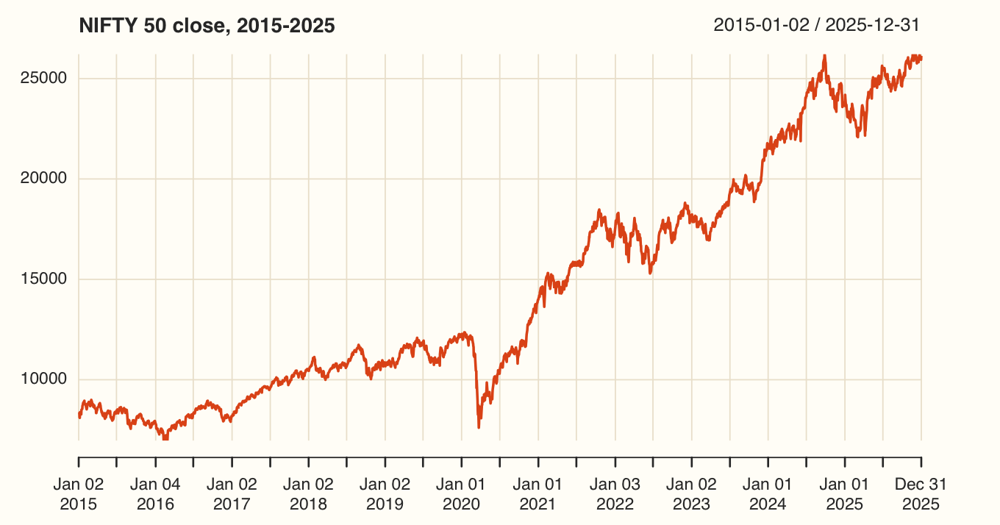
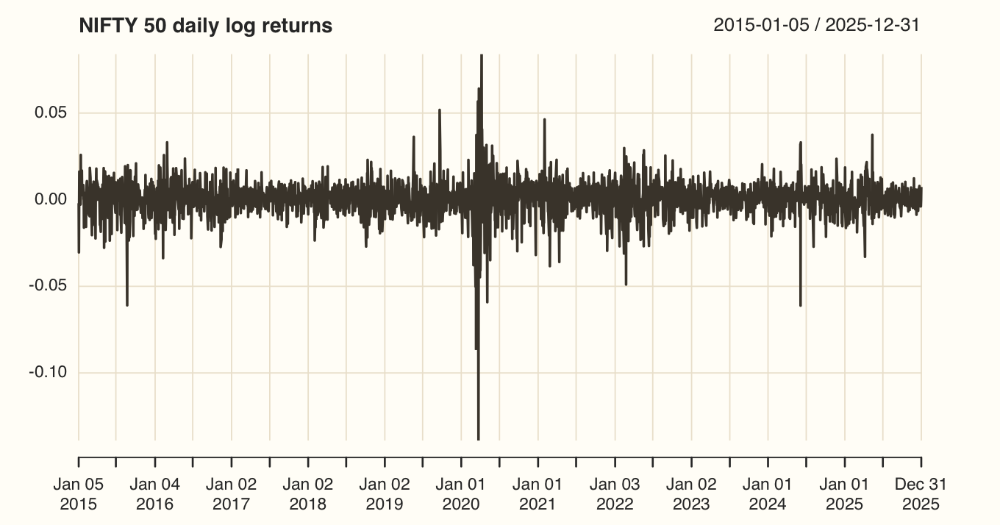
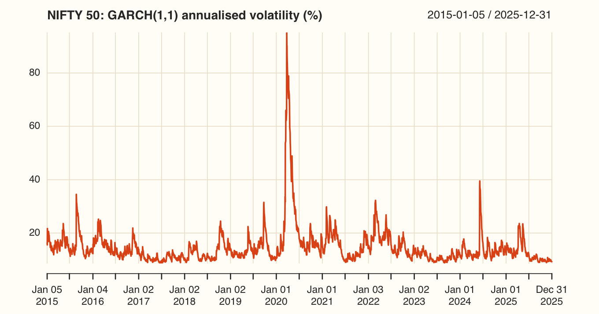
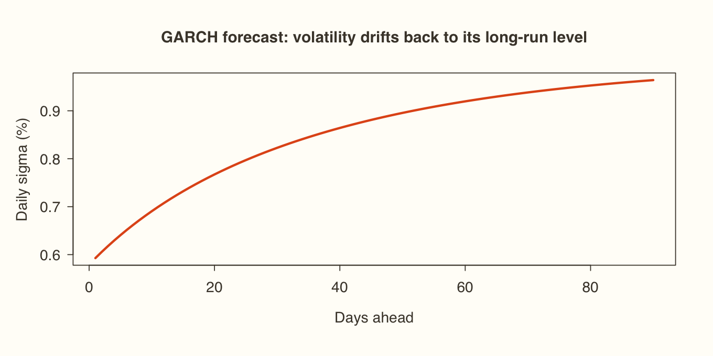
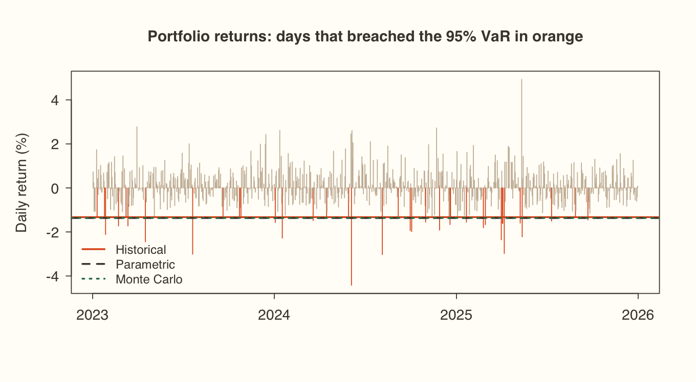

Rshown, not run here
install.packages(c("quantmod", "rugarch", "FinTS"))
library(quantmod)
getSymbols("^NSEI", src = "yahoo", from = "2015-01-01")
price <- Cl(NSEI)Learn AI / Financial Data Analytics using R / Module 5
MODULE 5 OF 6 · 4 SESSIONSReturns are only half the story. Model how NIFTY's risk changes from day to day with ARCH and GARCH, then put a rupee figure on downside risk with Value at Risk and check that figure with a backtest.
Session 5.1
Modules 2–4 modelled the mean: the expected return. Finance cares just as much about risk, because asset pricing is all about risk-adjusted return. The classical regression in Module 3 assumed homoskedasticity, a constant error variance. Market returns break that assumption every day.
ARCH stands for autoregressive conditional heteroskedasticity. Today's variance depends on yesterday's squared shocks:
ARCH(q): σₜ² = α₀ + α₁εₜ₋₁² + … + α_qεₜ₋_q²
If the α's are significantly above zero, there's an ARCH effect. The drawback is that capturing long memory needs many lags, which eats degrees of freedom and can produce negative coefficients that make no sense for a variance.
GARCH adds yesterday's variance itself, so one term captures that long memory:
GARCH(1,1): σₜ² = ω + α₁εₜ₋₁² + β₁σₜ₋₁²
| Term | Name | Meaning |
|---|---|---|
| ω | Constant | The long-run baseline of variance |
| α₁ | ARCH term | Reaction to news: how much yesterday's surprise moves today's risk |
| β₁ | GARCH term | Persistence: how much yesterday's risk carries into today |
| α₁ + β₁ | Close to 1 means shocks fade slowly. It must stay below 1 |
The procedure has three steps:
1. Fit a mean model (ARMA) to the returns. 2. Test its residuals for an ARCH effect. 3. If one is present, fit a GARCH model and forecast volatility.
Session 5.2
The lecture downloads prices live with quantmod:
install.packages(c("quantmod", "rugarch", "FinTS"))
library(quantmod)
getSymbols("^NSEI", src = "yahoo", from = "2015-01-01")
price <- Cl(NSEI)To keep everyone on identical numbers, these pages use the same Yahoo series saved as a CSV (2015–2025):
library(xts)
url <- "https://xploreai.co.in/courses/fda-r/data/"
rust <- "#E2571B"; espresso <- "#4A4238"
nifty <- read.csv(paste0(url, "NIFTY50.csv"))
price <- xts(nifty$Close, order.by = as.Date(nifty$Date))
head(price, 3); tail(price, 3) [,1]
2015-01-02 8395.5
2015-01-05 8378.4
2015-01-06 8127.4
[,1]
2025-12-29 25942
2025-12-30 25939
2025-12-31 26130plot(price, col = rust, main = "NIFTY 50 close, 2015-2025", grid.col = "#EDE4D3", yaxis.right = FALSE)
returns <- na.omit(diff(log(price)))
plot(returns, col = espresso, main = "NIFTY 50 daily log returns", grid.col = "#EDE4D3", yaxis.right = FALSE)
AR_fit <- arima(returns, order = c(1, 0, 0))
AR_fit
residuals_AR <- residuals(AR_fit)
Call:
arima(x = returns, order = c(1, 0, 0))
Coefficients:
ar1 intercept
-0.026 0
s.e. 0.019 0
sigma^2 estimated as 0.000106: log likelihood = 8547.5, aic = -17089H₀: there is no ARCH effect. We need to reject it before a GARCH model is justified.
library(FinTS)
ArchTest(residuals_AR, lags = 12)ARCH LM-test; Null hypothesis: no ARCH effects data: residuals_AR Chi-squared = 747, df = 12, p-value <2e-16
rugarch separates the specification (what model) from the fit (estimate it on data).
library(rugarch)
garch11_spec <- ugarchspec(
variance.model = list(model = "sGARCH", garchOrder = c(1, 1)),
mean.model = list(armaOrder = c(1, 0), include.mean = TRUE),
distribution.model = "norm")
garch11_fit <- ugarchfit(spec = garch11_spec, data = returns)
round(garch11_fit@fit$matcoef, 6)Estimate Std. Error t value Pr(>|t|) mu 0.000678 0.000157 4.3101 0.000016 ar1 0.050611 0.020820 2.4308 0.015064 omega 0.000002 0.000001 2.0811 0.037424 alpha1 0.104654 0.013455 7.7783 0.000000 beta1 0.872156 0.015047 57.9614 0.000000
sum(coef(garch11_fit)[c("alpha1", "beta1")]) # persistence[1] 0.97681
cond_vol <- sigma(garch11_fit) * sqrt(252) * 100 # annualised, in %
plot(cond_vol, col = rust, main = "NIFTY 50: GARCH(1,1) annualised volatility (%)",
grid.col = "#EDE4D3", yaxis.right = FALSE)
garch_fc <- ugarchforecast(garch11_fit, n.ahead = 90)
sigma_fc <- as.numeric(sigma(garch_fc))
round(head(sigma_fc), 5) # daily sigma for T+1, T+2, ...
sqrt(sum(sigma_fc^2)) # aggregate 90-day volatility[1] 0.00593 0.00606 0.00618 0.00629 0.00641 0.00651 [1] 0.081233
plot(sigma_fc * 100, type = "l", lwd = 2.5, col = rust, xlab = "Days ahead", ylab = "Daily sigma (%)",
main = "GARCH forecast: volatility drifts back to its long-run level")
abline(h = sqrt(coef(garch11_fit)["omega"] / (1 - sum(coef(garch11_fit)[c("alpha1", "beta1")]))) * 100,
col = espresso, lty = 2)
Session 5.3
Value at Risk answers one question: how much could we lose on a bad day? A 1-day 95% VaR of −1.3% means that on 95% of days the loss won't exceed 1.3%. On the other 5%, it will.
The data is the daily log return of an equal-weighted portfolio of Reliance, TCS, HDFC Bank, Infosys and ICICI Bank, 2023–2025.
data <- read.csv(paste0(url, "portfolio_returns.csv"))
str(data)
data$Date <- as.Date(data$Date, format = "%d-%m-%Y")
returns <- data$Portfolio_Return
mu <- mean(returns); sigma <- sd(returns)
cat("Mean:", round(mu, 6), " SD:", round(sigma, 6), " Days:", length(returns), "\n")
conf_level <- 0.95; alpha <- 1 - conf_level'data.frame': 740 obs. of 2 variables: $ Date : chr "02-01-2023" "03-01-2023" "04-01-2023" "05-01-2023" ... $ Portfolio_Return: num 0.00727 0.00244 -0.01062 -0.00899 -0.01068 ... Mean: 0.000324 SD: 0.008506 Days: 740
| Method | How | Assumption |
|---|---|---|
| Historical | The 5th percentile of actual past returns | The past repeats; no distribution assumed |
| Parametric | μ + σ × z₀.₀₅, where z₀.₀₅ = −1.645 | Returns are normal |
| Monte Carlo | Simulate 10,000 returns, take the 5th percentile | The simulated model is right |
hist_var <- quantile(returns, probs = alpha)
param_var <- mu + sigma * qnorm(alpha)
set.seed(123)
sim_returns <- rnorm(10000, mean = mu, sd = sigma)
mc_var <- quantile(sim_returns, probs = alpha)
var_results <- data.frame(Method = c("Historical", "Parametric", "Monte Carlo"),
VaR = round(c(hist_var, param_var, mc_var), 5),
LossPct = round(-100 * c(hist_var, param_var, mc_var), 3))
var_resultsMethod VaR LossPct 1 Historical -0.01328 1.328 2 Parametric -0.01367 1.367 3 Monte Carlo -0.01364 1.364
A violation is a day when the actual return falls below the VaR. At 95%, you expect violations on 5% of days.
n_obs <- length(returns)
backtest <- data.frame(Method = var_results$Method,
Expected = n_obs * alpha,
Actual = c(sum(returns < hist_var), sum(returns < param_var), sum(returns < mc_var)))
backtest$ViolationRatio <- round(backtest$Actual / backtest$Expected, 3)
backtestMethod Expected Actual ViolationRatio 1 Historical 37 37 1.000 2 Parametric 37 26 0.703 3 Monte Carlo 37 27 0.730
The Kupiec proportion-of-failures (POF) test asks whether the actual violation rate differs significantly from 5%. H₀: the model is correctly calibrated.
kupiec <- function(x, n, p) {
phat <- x / n
lr <- -2 * (log((1 - p)^(n - x) * p^x) - log((1 - phat)^(n - x) * phat^x))
c(LR = round(lr, 3), p.value = round(1 - pchisq(lr, df = 1), 3))
}
t(sapply(backtest$Actual, kupiec, n = n_obs, p = alpha))LR p.value [1,] 0.000 1.000 [2,] 3.825 0.051 [3,] 3.127 0.077
plot(data$Date, returns * 100, type = "h", col = ifelse(returns < hist_var, rust, "#C9B8A3"),
xlab = "", ylab = "Daily return (%)", main = "Portfolio returns: days that breached the 95% VaR in orange")
abline(h = var_results$VaR * 100, col = c(rust, espresso, "#2F7D5B"), lty = c(1, 2, 3), lwd = 2)
legend("bottomleft", legend = var_results$Method, col = c(rust, espresso, "#2F7D5B"),
lty = c(1, 2, 3), lwd = 2, bty = "n", cex = .85)
portfolio_value <- 1e7 # Rs 1 crore
data.frame(Method = var_results$Method,
VaR_Rs = round(portfolio_value * var_results$LossPct / 100))Method VaR_Rs 1 Historical 132800 2 Parametric 136700 3 Monte Carlo 136400
Session 5.4
| Ingredient | Example |
|---|---|
| Portfolio value | Rs 1,000 crore |
| Confidence level | 95% or 99% |
| Holding period | 1 day, 10 days, 1 week |
| Volatility | From history, from σ, or from GARCH (Session 5.2) |
| Speed | Fast | Fastest | Slowest |
|---|---|---|---|
| Fat tails | Captured, if they're in the sample | Missed (assumes normal) | Only if you simulate them |
| Best for | Simple portfolios with long histories | Quick daily estimates | Options and other complex books |
ES_hist <- mean(returns[returns < hist_var])
c(VaR_95 = round(unname(hist_var) * 100, 2), ExpectedShortfall_95 = round(ES_hist * 100, 2)) VaR_95 ExpectedShortfall_95
-1.33 -1.84